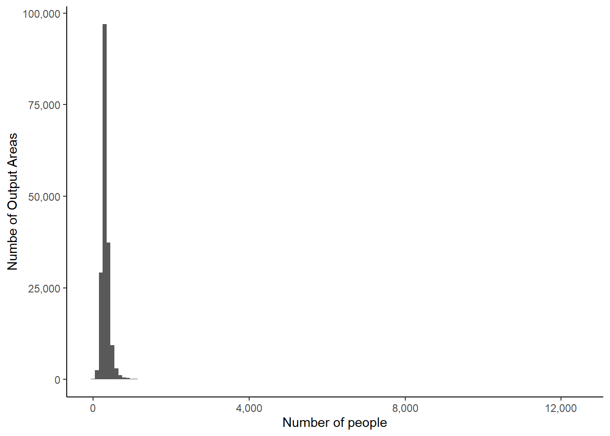
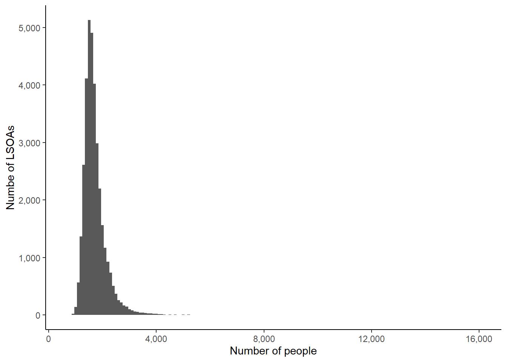
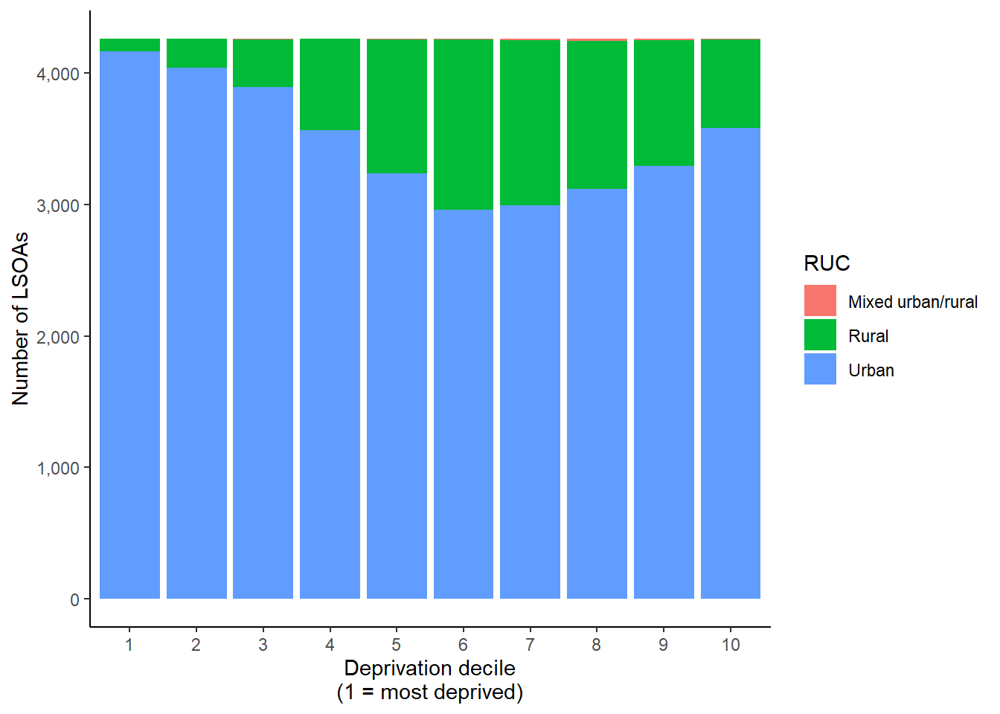
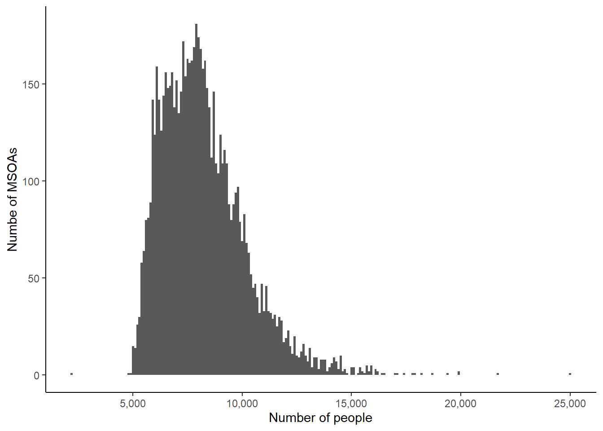

1 Neighbourhoods and other small areas
The UK is carved into a range of small areas — different kinds of Output Area and wards — each of which have a variety of datasets associated with them, including population estimates, rural-urban classifications, the Index of Multiple Deprivation, and the British Red Cross Vulnerability Index.
The various Output Areas are known as statistical geographies - they don’t necessarily represent what their residents would consider a meaningful neighbourhood or community. Instead, they were created for the Census with the intention of containing roughly the same numbers of people.
1.1 Output Areas (OAs)
Output Areas (known as Small Areas in Northern Ireland) are the smallest of the Census statistical geographies.
There are 181,408 OAs in England and Wales. OAs contain on average 309 people, although this ranges from 1 up to 12,418 people.

OAs vary significantly in geographical size, the smallest being (0.15km^2) and the largest being (201,672km^2).
1.2 Lower Layer Super Output Areas (LSOAs)
The next level up is called Lower Layer Super Output Area in England and Wales, Data Zone in Scotland, and Super Output Area in Northern Ireland.
There are 34,753 LSOAs in England and Wales. LSOAs contain on average 1,618 people, although this ranges from 679 up to 16,004 people.

LSOAs vary significantly in geographical size, the smallest being Kensington and Chelsea 021C (17km^2) and the largest being Northumberland 019C (683,794km^2).
1.2.1 Deprivation and rural-urban classifications
The Index of Multiple Deprivation and rural-urban classifications are calculated for LSOAs (and their devolved equivalents). Most rural areas tend to be towards the least-deprived end:
## Warning: Ignoring unknown parameters: binwidth, bins, pad
1.3 Middle Layer Super Output Areas (MSOAs)
The final kind of Output Area is the MSOA (in England and Wales), also called Intermediate Zones in Scotland. There is no equivalent in Northern Ireland.
There are 7,201 MSOAs in England and Wales. MSOAs contain on average 7,927 people, although this ranges from 2,242 up to 24,969 people.

MSOAs vary significantly in geographical size, the smallest being (239km^2) and the largest being (1,128,171km^2).
1.3.1 Vulnerability
The British Red Cross’s Vulnerability Index is calculated for MSOAs (and their devolved equivalents).
1.4 Wards
1.4.1 Community Needs Index
OCSI’s Community Needs Index is calculated for wards.